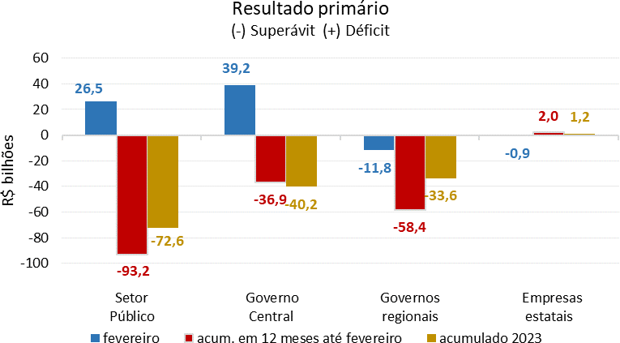
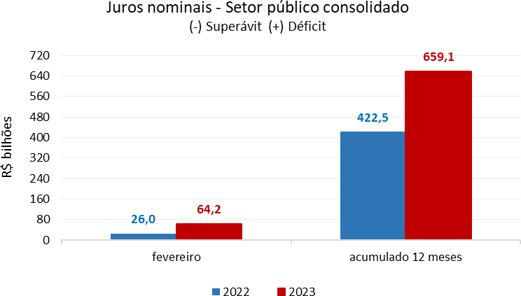
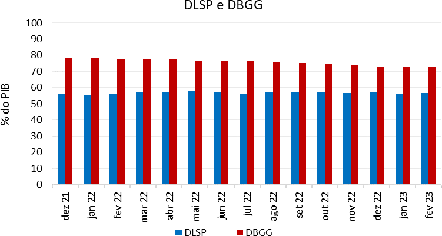

O lado fiscal do Estado
A política fiscal trata das decisões do governo sobre gasto público, tributação e endividamento. Nesta aula, o foco recai sobre os principais indicadores das contas públicas: resultado primário, juros nominais, resultado nominal, DLSP e DBGG.
origem do resultado primário
custo financeiro da dívida
estoque acumulado das necessidades fiscais
Ideia-chave: superávit ou déficit fiscal não é só contabilidade. Afeta confiança, juros, dívida, espaço para políticas públicas e a capacidade do governo de responder a crises.
O vocabulário básico da política fiscal
Resultado primário
É a diferença entre receitas e despesas não financeiras do setor público. Exclui os juros da dívida.
Juros nominais
Representam o custo financeiro do endividamento público, apropriado por competência.
Resultado nominal
É o resultado primário mais os juros nominais. Mostra o saldo final das contas públicas no período.
DLSP
Dívida Líquida do Setor Público: considera passivos menos ativos financeiros do setor público. É uma medida líquida do endividamento.
DBGG
Dívida Bruta do Governo Geral: soma os passivos brutos do Governo Federal, INSS e governos estaduais e municipais. É a medida mais usada em comparações internacionais.
Conteúdo de ampliação didática
Política fiscal expansionista tende a elevar gastos e/ou reduzir tributos para estimular a atividade econômica. Política fiscal contracionista faz o contrário, buscando conter a demanda, a inflação ou o crescimento da dívida.
O que a nota fiscal de 31/03/2023 mostra
O material resume os números de fevereiro de 2023 para o setor público consolidado, com comparação ao mesmo período do ano anterior e leitura em 12 meses.


Resultado primário em fevereiro de 2023
O setor público consolidado registrou déficit primário de R$ 26,5 bilhões, ante superávit de R$ 3,5 bilhões em fevereiro de 2022.
No detalhamento:
- Governo Central: déficit de R$ 39,2 bilhões
- Governos regionais: superávit de R$ 11,8 bilhões
- Empresas estatais: superávit de R$ 938 milhões
Leitura em 12 meses
Nos doze meses até fevereiro de 2023, o setor público consolidado acumulou superávit primário de R$ 93,2 bilhões, equivalente a 0,93% do PIB.
Apesar do superávit, o valor foi 0,31 ponto percentual do PIB menor que o acumulado até janeiro, sinalizando piora relativa do resultado.
Juros e resultado nominal
Os juros nominais somaram R$ 64,2 bilhões em fevereiro de 2023, contra R$ 26,0 bilhões em fevereiro de 2022. No acumulado em doze meses, chegaram a R$ 659,1 bilhões, o equivalente a 6,54% do PIB.
Com isso, o resultado nominal do setor público consolidado foi deficitário em R$ 90,6 bilhões no mês, e o déficit nominal acumulado em 12 meses alcançou R$ 565,9 bilhões (5,62% do PIB).
DLSP e DBGG

DLSP em fevereiro de 2023
A DLSP atingiu 56,6% do PIB (R$ 5,7 trilhões), com aumento de 0,5 p.p. no mês.
Os principais fatores foram:
- juros nominais apropriados: +0,6 p.p.
- déficit primário: +0,3 p.p.
- variação do PIB nominal: -0,4 p.p.
- desvalorização cambial de 2,1%: -0,3 p.p.
DBGG em fevereiro de 2023
A DBGG atingiu 73,0% do PIB (R$ 7,4 trilhões), também com aumento de 0,5 p.p. frente ao mês anterior.
Pesaram mais:
- juros nominais apropriados: +0,6 p.p.
- emissões líquidas de dívida: +0,2 p.p.
- variação do PIB nominal: -0,5 p.p.
Elasticidades da dívida
Segundo a nota, um aumento de 1 p.p. na Selic, mantido por doze meses, eleva aproximadamente:
- DLSP: R$ 40,6 bilhões (0,40 p.p. do PIB)
- DBGG: R$ 38,6 bilhões (0,38 p.p. do PIB)
Outras sensibilidades
A nota também mostra que:
- uma desvalorização de 1% do câmbio reduz a DLSP em 0,07 p.p. do PIB, mas eleva a DBGG em 0,09 p.p.;
- um aumento de 1 p.p. nos índices de preços eleva tanto a DLSP quanto a DBGG em cerca de 0,17 p.p. do PIB.
Leitura econômica do caso
Quando o primário piora
Se as receitas não acompanham as despesas primárias, o setor público precisa recorrer mais ao endividamento ou reduzir gastos futuros. Isso pressiona a sustentabilidade fiscal.
Quando os juros sobem
Mesmo com um resultado primário razoável, juros elevados podem transformar o quadro nominal em déficit. É o velho recado da macroeconomia: a conta chega, e ela costuma vir com Selic.
Por que olhar DLSP e DBGG?
A DLSP ajuda a captar o endividamento líquido; a DBGG mostra o estoque bruto da dívida. Olhar apenas uma delas pode esconder parte da história.
Ligação com política fiscal
Resultados persistentes de déficit, combinados com juros altos, tendem a elevar a dívida. Isso pode reduzir o espaço para políticas públicas e aumentar a sensibilidade do país a choques econômicos.
O que precisa ficar
20 questões para revisar a aula
A maioria pode ser respondida diretamente a partir do material; algumas pedem interpretação econômica.